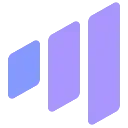
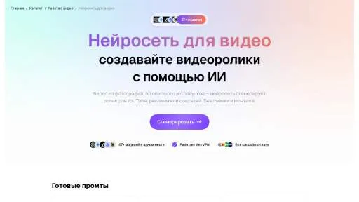

Spikes StudioYouTube и блогинг
Spikes Studio используют для задачи: собирать видеосцену по описанию или визуальному исходнику. Ещё одно направление работы: готовить видеоматериалы для публикации.
Раздел «Видео»: варианты ИИ для этой задачи, описания возможностей и переходы к обзорам. Сравните несколько решений на одинаковом примере.
Сделайте короткую видеозаставку с условной городской сценой без сложного сюжета. Опишите время суток, композицию и движение; оцените стабильность зданий и направление камеры, а также отсутствие случайных букв и лишних объектов перед дальнейшим использованием ролика.
Создай короткую заставку: спокойная городская улица утром, деревья у тротуара, мягкий свет. Медленный плавный наезд камеры, здания сохраняют форму, без читаемых вывесок и появления новых автомобилей.


Spikes Studio используют для задачи: собирать видеосцену по описанию или визуальному исходнику. Ещё одно направление работы: готовить видеоматериалы для публикации.
Для «Storyboarder» сначала определите свою задачу и требуемый результат. Карточка относится к направлению «Создание контента».
Сравнивать «Tevian» с другими инструментами раздела «Видео» удобнее на одинаковом исходном материале.
«Unscreen.com» отделяет объект от фона изображения. «Unscreen.com» помогает править исходный видеоматериал.
«Visper» получает речевую запись из текста. «Visper» создаёт видеоматериал по заданию.
«Wave.Video» создаёт видеоматериал по заданию. «Wave.Video» также помогает подготовить персонализированный видеоматериал.
«Windsor» создаёт видеоматериал по заданию. Дополнительно «Windsor» помогает подготовить персонализированный видеоматериал.
xpression camera работает как виртуальная камера с ИИ-управлением выражениями лица в реальном времени. Приложение также предлагает анимационные варианты для контента. Среди направлений использования есть видеочаты и трансляции, а также мемы и GIF, объединяющие изображение человека с выбранной визуальной подачей.
«10LevelUp» подготавливает короткие фрагменты видеозаписи. «10LevelUp» работает с материалами для социальных площадок.
«AISaver» меняет лицо в визуальном материале.
«APOB AI (app.apob.ai)» готовит визуальные материалы по заданию. «APOB AI (app.apob.ai)» также создаёт портретные и аватарные изображения.
«BeautyPlus» помогает исправлять и оформлять фотографии.
«Blend AI» представлен в разделе «Изображения». При выборе проверьте нужную операцию и условия работы с результатом.

Descript связывает монтаж аудио и видео с текстовой расшифровкой. Позволяет менять запись через её содержание, обрабатывать звук и готовить короткие версии материала.
Explore AI помогает находить видеоматериалы по различным темам. В описанных направлениях есть научные и технологические вопросы, космос и сведения о устройствах. Пользователь обращается к поисковому инструменту, чтобы подобрать контент для интересующей темы и продолжить знакомство с найденными видео.

Fliki связывает текстовый материал с подготовкой озвученного видео. Для понятного ролика нужно согласовать порядок сцен с речью и длительностью эпизодов.
Для «Flow Studio» сначала определите свою задачу и требуемый результат. Карточка относится к направлению «Видео».
Сравнивать «FocuSee» с другими инструментами раздела «Видео» удобнее на одинаковом исходном материале.
«Haiper AI» работает с материалами для социальных площадок. Дополнительно «Haiper AI» помогает подготовить персонализированный видеоматериал.
Hedra связывает изображение персонажа с речью для подготовки видео. Качество сцены зависит от исходного портрета и согласованности движений с аудио.
HitPaw Video Object Remover помогает убирать лишние элементы видеокадра, включая людей на фоне, текст и другие объекты. Обработку стоит оценивать в движении, а не только на одном стоп-кадре. Проверьте границы восстановленного участка, последовательность кадров и сохранность нужных деталей рядом с удалённым элементом.
Сравнивать «Infinity ai» с другими инструментами раздела «Видео» удобнее на одинаковом исходном материале.
«Neuralframes» помогает подготовить персонализированный видеоматериал.

Submagic рассчитан на задачи, где нужно собирать видеосцену по описанию или визуальному исходнику. Ещё одно направление работы: готовить видеоматериалы для публикации.
Для «SummarQ» сначала определите свою задачу и требуемый результат. Карточка относится к направлению «Видео».
«Video2Quiz» помогает подготовить персонализированный видеоматериал.
«VideoDubber» представлен в разделе «Видео». При выборе проверьте нужную операцию и условия работы с результатом.
Vimmerse превращает неподвижные фотографии в видеоматериал. Предусмотрены настройка движения и обработка нескольких изображений пакетом. Инструмент связывает исходный снимок с созданием динамической сцены, которая может использоваться в визуальном рассказе или маркетинговом материале, без необходимости считать каждую полученную анимацию готовой публикацией.
«Virbo AI Video Generator» создаёт видеоматериал по заданию. «Virbo AI Video Generator» помогает подготовить персонализированный видеоматериал.
Vocapia преобразует речь в текст из аудио и видеодокументов. Программный пакет работает с разными языками и предлагает веб-сервисы. Анализ телефонной речи и подготовка видеосубтитров дополняют транскрибирование, связывая исходную запись с дальнейшим использованием её письменного содержания в выбранном процессе пользователя.
«Vocut» преобразует речевую запись в письменный материал. Дополнительно «Vocut» помогает собирать и править видеоматериал.
«vverse AI» создаёт видеоматериал по заданию. «vverse AI» также помогает подготовить персонализированный видеоматериал.
«X-Me (x-me.world)» создаёт портретные и аватарные изображения. «X-Me (x-me.world)» также создаёт видеоматериал по заданию.
«YTSummary» помогает строить карту связанных идей.
«Ai Art Generator» готовит визуальные материалы по заданию. «Ai Art Generator» также создаёт видеоматериал по заданию.
«AI Logo Reveals» работает с материалами для социальных площадок. «AI Logo Reveals» также помогает подготовить персонализированный видеоматериал.
Сравнивать «BlogToVideoAI» с другими инструментами раздела «Видео» удобнее на одинаковом исходном материале.
«Chromox» создаёт видеоматериал по заданию. «Chromox» помогает подготовить персонализированный видеоматериал.
«Colorize» добавляет цвет к чёрно-белому снимку.
«Cutlabs AI» помогает собирать и править видеоматериал.
«Ecomadpro» помогает подготовить персонализированный видеоматериал.
FineShare FineCam предоставляет виртуальную камеру с участием ИИ для записи и видеовстреч. Среди функций есть удаление фона в реальном времени и обработка звука, а также улучшение видео. Портретный режим дополняет подготовку изображения пользователя в рамках выбранной визуальной коммуникации.
«Gena» представлен в разделе «Видео». При выборе проверьте нужную операцию и условия работы с результатом.

Gencraft используют, чтобы получать изображения из словесного задания. Ещё одно направление работы: менять фотографии с учётом выбранного оформления.
«Joineo» помогает собирать и править видеоматериал.
«Motionscribe» создаёт видеоматериал по заданию. Дополнительно «Motionscribe» готовит формулировки рекламного материала.
«Nvidia Maxine» представлен в разделе «Видео». При выборе проверьте нужную операцию и условия работы с результатом.

Oxolo создаёт видеоматериалы с участием ИИ для задач электронной торговли. Продукт ориентирован на компании, которым нужны маркетинговые ролики для представления товаров. Основное назначение связано с подготовкой такого контента; само создание видео не подтверждает рост продаж или определённую реакцию аудитории после размещения.
Страница 7 из 8